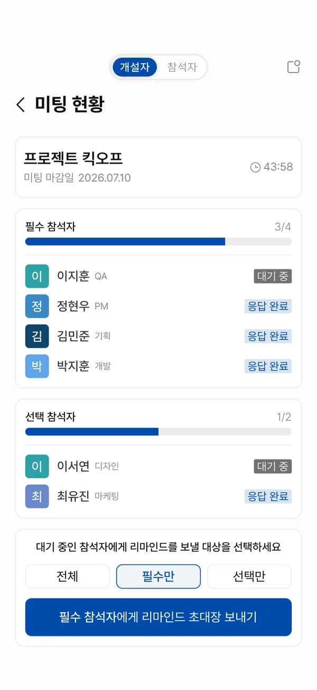
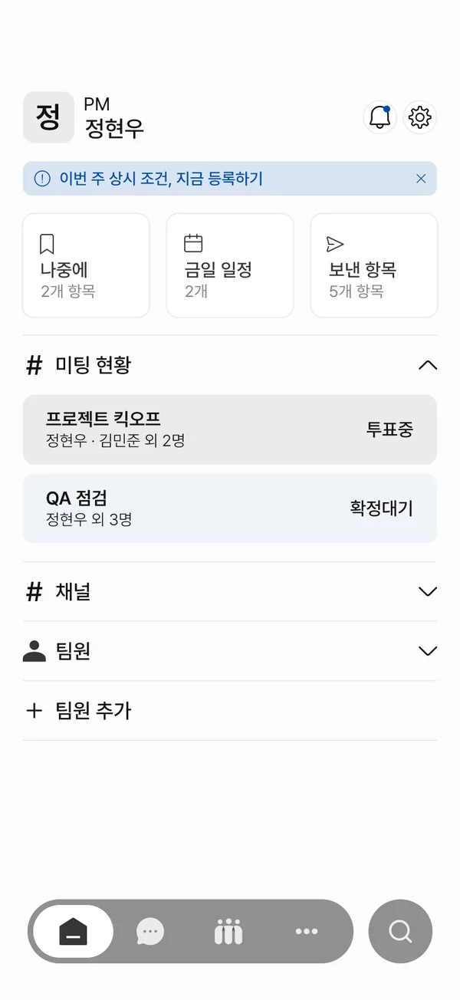
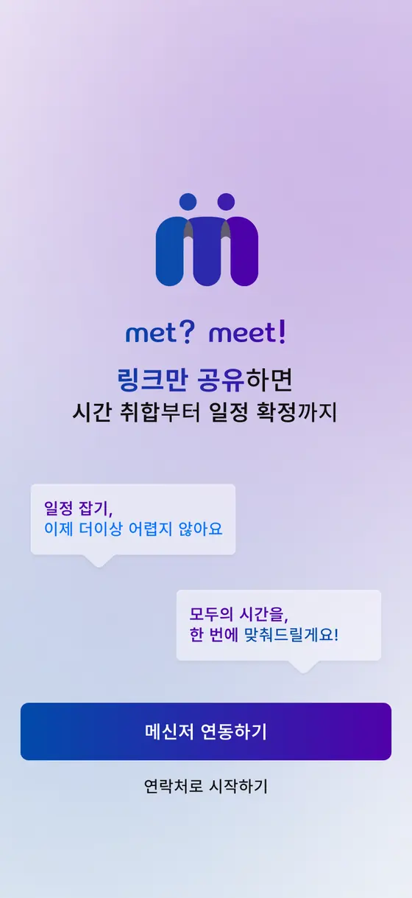
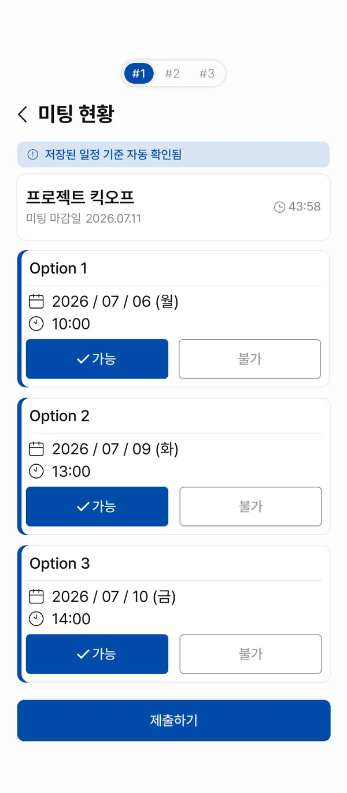
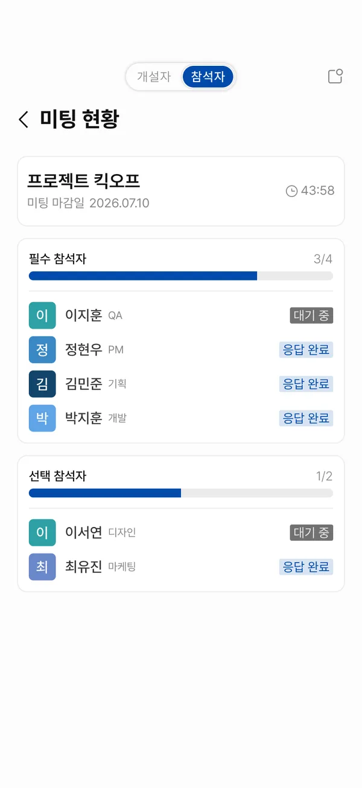
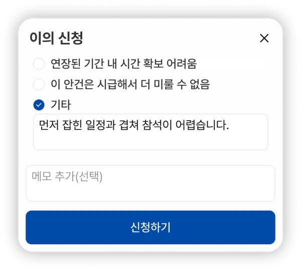

01
인원이 늘수록 모두 가능한 시간이 사라진다
5명이 있는 단톡방에서 약속을 잡는 일은 한 번에 끝나는 법이 거의 없습니다. 톡을 바로 확인하지 않는 사람이 있고, 확인해도 그 시간에 안 되는 사람이 있습니다. 결국 5명 모두가 가능한 날을 찾기보다, 한두 명이 빠진 채로 진행하는 경우가 더 많습니다.
“모두가 가능한 날짜를 맞추기 어렵다. 누구는 되고 누구는 안 되고.”인터뷰 응답
직장인 6명 인터뷰와 기존 조율 서비스 분석에서 네 가지 문제를 찾았습니다.
5명이 있는 단톡방에서 약속을 잡는 일은 한 번에 끝나는 법이 거의 없습니다. 톡을 바로 확인하지 않는 사람이 있고, 확인해도 그 시간에 안 되는 사람이 있습니다. 결국 5명 모두가 가능한 날을 찾기보다, 한두 명이 빠진 채로 진행하는 경우가 더 많습니다.
개설자가 “수요일 3시 어때요?”라고 물으면, 답은 30분 뒤에 올 수도 다음 날 오전에 올 수도 있습니다. 그 사이 개설자는 다시 물어봐야 할지 더 기다려야 할지 판단할 근거가 없습니다. 몇 명이 확인했는지, 몇 명이 남았는지조차 보이지 않기 때문입니다.
참석자마다 중요도가 다른데 기존 도구는 이를 반영하지 못합니다. 생일 모임이면 생일자가, 집들이면 집주인이 편한 시간을 기준으로 날짜를 잡지만, 이 우선순위는 도구가 아니라 사람이 매번 직접 판단해야 합니다.
6명 중 5명이 반복 모임에도 조건을 새로 확인한다고 답했습니다. 문제는 재확인 자체가 아니라, 이전 값을 참고할 방법이 없다는 점이었습니다.
네 문제 모두 단톡방과 팀 채널, 즉 메신저 안에서 벌어집니다. 인터뷰 사례는 회사 회의보다 사적 모임이 많았지만 구조는 같았고, m.m은 이 문제를 조율이 실제로 시작되는 자리인 업무 메신저 안에서 풀었습니다.
기존 서비스가 “겹치는 칸을 찾는” 데서 멈추는 세 지점을, 완전 자동화 대신 통제권을 남기는 방향으로 다르게 다룹니다.
화면 위 #1 / #2 / #3, 개설자 / 참석자 토글은 실제 UI가 아니라 시나리오 구분 표기입니다. 자세히 보기
겹치는 칸을 찾는 방식은 모든 응답을 같은 무게로 계산합니다. 누가 꼭 있어야 하는지는 사람이 따로 판단해야 합니다.
개설자가 참석자를 필수와 선택으로 지정합니다. 후보 시간은 필수 참석자가 모두 가능할 때만 추천되고, 한 명이라도 어려우면 자동으로 빠집니다. 6명 전원이 맞는 시간을 찾기보다 반드시 필요한 사람 기준으로 범위를 좁히는 편이 실질적이라는 판단에서입니다.
선택 참석자를 아예 배제하는 방식도 검토했지만, 회사 맥락에서는 참석하지 않더라도 정보를 공유받아야 합니다. 초대는 유지하고 가중치만 낮추는 절충안을 택했습니다.
기존 방식에서는 누가 남았는지 알기 어렵고, 재촉은 개설자가 메신저로 따로 해야 합니다.
필수와 선택을 분리한 진행률을 실시간으로 보여주고, 대기 중인 참석자에게 앱 안에서 리마인드를 보냅니다. 리마인드의 확인을 누르면 투표 현황으로 바로 연결되어, 반복 알림 없이도 응답까지 이어집니다.
무응답 시 대타를 지정하는 방식도 검토했지만, 대타가 상시 프로필을 등록하지 않았다면 조건 계산에 반영할 수 없습니다. 계산 근거 없는 자동 지정은 신뢰를 잃기 때문에 리마인드 재발송과 개설자 승인 하 전환으로 범위를 좁혔습니다.

기존 방식은 회차마다 새 링크, 새 입력입니다. 지난번 조건은 어디에도 남지 않습니다.
외근 요일과 선호·회피 시간대를 프로필에 저장해 두고, 매주 확인 모달로 바뀐 부분만 고칩니다. 이전 값을 기본으로 채워두되 확인은 사람이 합니다.
확인 절차 없이 지난주 설정을 그대로 재사용하는 방식도 검토했지만, 인터뷰에서 6명 중 5명이 “상황은 항상 달라지니까” 매번 재확인한다고 답해 확인 모달을 남기는 쪽으로 정했습니다.
일정 조율은 이미 메신저 안에서 시작됩니다. m.m은 Slack, 카카오워크 같은 업무 메신저에 연동되어, 채널 안 미팅 카테고리에서 전 과정을 끝냅니다.
조율 링크를 만들어 메신저에 붙이고, 응답은 다른 화면에서 받고, 확정 결과를 다시 메신저로 옮겨야 합니다. 도구를 하나 더 쓰기 위해 옮겨 다니는 일이 남습니다.
이미 팀원과 채널이 있는 곳에서 시작합니다. 메신저 계정을 연동하면 참석자 목록을 새로 만들 필요가 없고, 확정된 일정은 그 메신저의 캘린더 기능으로 바로 들어갑니다.

화면은 Slack UI를 기준으로 설계했습니다.
채널 · 팀원 구조 사이에 미팅 현황이 들어갑니다.
단계를 누르면 화면이 바뀝니다. 화면 위에 마우스를 올리면 아래쪽까지 스크롤됩니다.
Figma 프로토타입 23개 화면 중 대표 화면입니다.

01 ONBOARDING
프로토타입 화면 상단의 개설자 / 참석자, #1 / #2 / #3 토글은 실제 앱 UI가 아닙니다.
세 가지 상황을 모두 그렸습니다. 투표 화면뿐 아니라 그 뒤의 결과 화면도 #1 / #2 / #3에 각각 대응합니다. 정상 흐름만 그리면 후보가 사라졌을 때 무엇을 보여줄지가 설계에서 빠지기 때문입니다.
세 후보 전부 투표할 수 있습니다. 제출하면 개설자의 확정 화면으로 넘어갑니다.

개설자와 참석자는 같은 응답 현황을 보지만, 할 수 있는 일이 다릅니다. 리마인드 발송처럼 조율을 움직이는 액션은 개설자에게만 열려 있습니다.
진행률 확인 + 리마인드 발송

진행률 확인만 가능
알고리즘에 맡기면 종료 조건이 없어집니다. 부담이 적은 방법부터 강제적인 방법 순서로, 네 번째에서 반드시 끝나게 했습니다.
가장 부담이 적은 방법입니다. 마감은 그대로 두고 회피 시간대까지 포함해 다시 계산하며, 화면에 그 사실을 명시합니다.
마감을 3일 연장합니다. 다만 늘어난 기간에 새로 생긴 후보가 특정 참석자에게는 맞지 않을 수 있어, 다음 단계인 이의 접수로 이어집니다.
확장된 기간의 후보가 맞지 않는 참석자는 사유를 들어 이의를 제기합니다. 일반 확장은 24시간, 강제 확장은 2시간 안에 받습니다.
위 세 단계로도 해결되지 않으면 자동 조율을 완전히 멈춥니다. 외근 요일만 지킨 채 개설자가 시간을 지정하고, 투표 없이 즉시 확정합니다. 가장 부담이 크지만 확실하게 끝나는 방법입니다.
필수 참석자의 이의가 개설자 승인 없이 방치되면, 해당 참석자는 선택 참석자로 강등된 뒤 진행됩니다.
필수 참석자를 보호하려던 원래 취지와 상충합니다. 그럼에도 이 규칙을 넣은 이유는, 개설자의 무응답이 조율 전체를 무한정 붙잡아 두는 상황을 막을 다른 방법을 찾지 못했기 때문입니다. 종료 보장을 위해 의도적으로 감수한 손해입니다.

상위 필터 세 개 아래로 하위 상태를 두어, 캘린더와 목록에서 같은 기준으로 걸러 볼 수 있게 했습니다.
| 상위 필터 | 하위 상태 | 전환 트리거 |
|---|---|---|
| 진행 | 대기 | 초대 발송부터 응답 마감(48시간)까지 |
| 진행 | 투표중 | 필수 참석자 전원 응답 완료부터 투표 마감까지 |
| 진행 | 확정대기 | 투표 종료부터 개설자가 확정을 누르기 전까지 |
| 예정 | 확정됨 | 개설자 확정부터 회의 시작 전까지 |
| 완료 | 종료 | 회의 종료 시각 경과. 유일한 시스템 자동 판정 |
23개 화면이 한 서비스로 읽히도록 색, 서체, 형태의 사용 범위를 먼저 정하고 시작했습니다.
두 사람이 마주 앉아 회의하는 모습입니다. 위쪽 원 두 개가 머리, 아래 기둥이 몸이 되어 소문자 m을 만듭니다. 서비스 이름 met? meet!의 첫 글자이면서, 조율의 끝이 결국 마주 앉는 일이라는 점을 담았습니다.
메인 컬러는 확정·제출처럼 되돌리기 어려운 액션에만 씁니다. 그라데이션은 브랜드가 드러나는 자리(로고, 온보딩, 주요 CTA)로 한정해 강조가 흔해지지 않게 했습니다.
한글과 숫자가 한 줄에 자주 섞이는 화면이라, 자간이 좁고 숫자 폭이 고른 Pretendard를 썼습니다.
라운드는 이 세 단계만 씁니다. 그림자는 실제로 떠 있는 요소(모달, 바텀시트)에만 쓰고, 나머지 위계는 1px 선과 여백으로 만듭니다.
배지 색은 두 가지만 씁니다. 지금 움직이고 있는 것은 브랜드 블루, 기다리는 중이거나 우선순위가 낮은 것은 그레이입니다. 화면이 바뀌어도 같은 규칙으로 읽힙니다.
업무 메신저 부가 서비스로 설계한 다인원 회의 조율 앱. 리서치부터 프로토타입까지 혼자 진행했습니다.